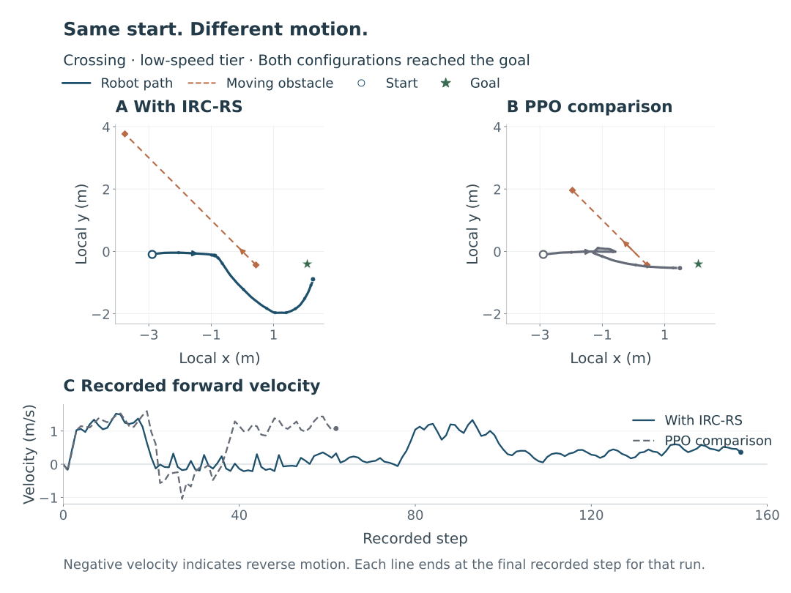
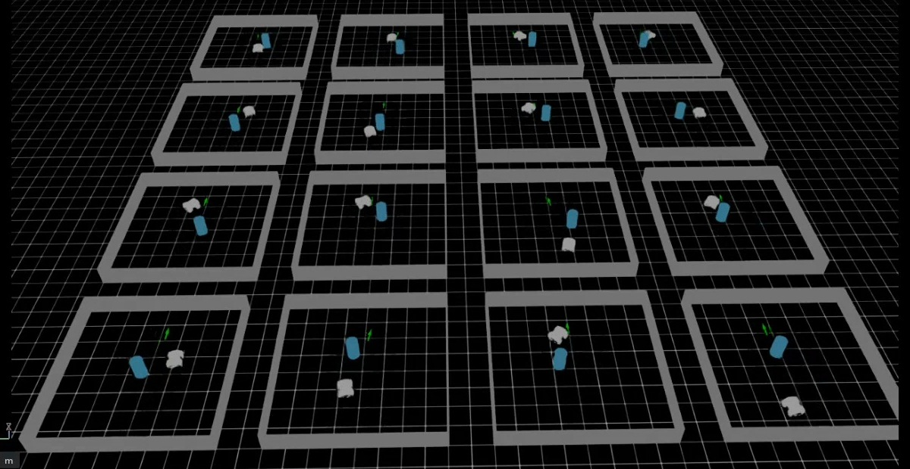

Mobile robot navigation
Risk-Field-Guided RL for Dynamic Robot Navigation
IRC-RSIso-Risk-Contour-guided Reward Shaping
I developed IRC-RS to train a mobile robot to balance goal progress with the risk of a moving obstacle. Its reward uses local risk and risk change to guide slowing, yielding and detours.
I tested the policy in TIB-3, a targeted set of dynamic encounters, then deployed it on a differential-drive robot through ONNX Runtime and ROS.

Research Question
A moving obstacle can cross a robot’s route just as it advances toward the goal. I wanted the training reward to distinguish useful progress from a move that increases collision risk, and to make room for yielding or taking a detour.
Method Principles
At the same moment, positions on an iso-risk contour have the same risk value. These contours provide a spatial view of the risk a robot encounters as it moves forward or takes a detour.
- Robot / robot route
- Obstacle / crossing route
- Illustrative risk contours
Contour crossing
Risk evolution
Read the mathematical definitions
The orange contours illustrate positions with equal risk at a given moment.
- R(x, t) ≡ Φ_R(x, t)
- Instantaneous risk at workspace position x and time t.
- λS, λΔ, λT ≥ 0
- Non-negative weights for state cost, contour crossing and risk evolution.
- γ ∈ (0, 1]
- Discount factor used in the potential-difference term.
- [z]+ = max(z, 0)
- Keep the positive part, so the evolution term penalizes rising risk.
- ∂t R(xt, t)
- Partial time derivative with the robot's workspace position held fixed.
State cost
rstate = −λS R(xt, t)
Read the risk at the robot's current position. A higher value contributes a larger negative state cost.
Contour crossing
rcross = λΔ [R(xt, t)− γR(xt+1, t)]
Freeze the obstacle scene at t and compare next robot positions. The inward and contour-following branches start at the same position.
Risk evolution
revo = −λT [∂tR(xt, t)]+
Keep the robot position fixed while the obstacle moves. Penalize a positive time derivative of risk; falling risk receives no symmetric reward from this term.
Along one contour, the crossing term is close to zero when γ is close to 1 and equals zero at γ = 1. Goal progress still contributes to the reward.
Principle-level risk shapingrIRC-RS = rstate + rcross + revo
From LiDAR clearance to a training signal
ψ = σ((dsafe − dfront) / σd)
The code uses a negative potential Φ = −ψ, so its shaping signal is γΦₜ − Φₜ₋₁ = ψₜ₋₁ − γψₜ.
The implementation compares adjacent observations. Its risk change can include both robot motion and obstacle motion; this is distinct from the fixed-scene and fixed-position comparisons above.
Real-Robot Demonstrations
The first recording shows the differential-drive robot responding to a moving box. The controlled runs below show how two local planners respond to obstacles approaching from different directions.

Controlled Real-Robot Comparisons
IRC-RS and the Dynamic Window Approach (DWA) each have 36 recorded runs, 12 per encounter type. Each pair shows independent runs with the obstacle approaching from the same direction.
Scrub each recording to compare the moment the robot and obstacle meet.
Crossing from the front-right
Head-on encounter
Diagonal approach from the front-right
Experimental Evaluation
Evaluation focuses on whether the robot can reach its goal when a moving obstacle forces a choice between advancing, yielding and taking a detour. The physical recordings show the deployed robot adjusting its route around an operator-moved box.
Simulation
91.9%(248/270)
3 encounter types × 3 obstacle-speed levels × 30 episodes per configuration.
Physical robot
91.7%(33/36)
12 physical trials per encounter type, using an operator-moved box obstacle.
| Simulation scenario | Policy with IRC-RS | Comparison PPO policy |
|---|---|---|
| All encounters | 91.9% (248/270) | 30.0% (81/270) |
| Head-on | 95.6% (86/90) | 25.6% (23/90) |
| Crossing | 98.9% (89/90) | 24.4% (22/90) |
| Diagonal | 81.1% (73/90) | 40.0% (36/90) |
In a separate planner evaluation, the Dynamic Window Approach (DWA) reached 74.6% success.


Simulation & Policy Training
I built a differential-drive navigation environment in NVIDIA Isaac Lab, varying obstacle layouts and start and goal locations. I configured sensing and motion limits with the physical robot in mind.
I designed TIB-3 (Targeted Interaction Benchmark-3) around three encounter geometries. Head-on tests response to an approaching obstacle, Crossing examines when to yield or proceed across an obstacle’s path, and Diagonal adds a non-axis-aligned approach.
I trained the policy with PPO in three stages. It first learned to reach a goal, then to navigate around static obstacles, and finally to handle moving obstacles.
To capture motion, I expanded the input from 194 to 556 values. I kept the learned weights for the current scan and robot state, and initialized the two older scans with progressively smaller copies of the current-scan weights. This let me transfer the static-navigation policy into dynamic training.

Sim2Real Deployment
I exported the simulation-trained policy to ONNX and ran it with ONNX Runtime in ROS on the physical robot. LiDAR resampling, scan history, coordinate transforms and observation ordering follow the training pipeline; policy outputs become linear and angular velocity commands.
I deployed the trained policy without additional real-world policy fine-tuning. Speed limits and goal-stop handling sit in the execution layer, alongside the existing localization and navigation system.
I built an RViz check for policy inputs and recorded commanded velocity with robot feedback. This lets me trace a discrepancy from sensor preprocessing through policy output to base motion.
During training in simulation
13 + 3 × 181 = 55613 robot/goal features + 3 LiDAR frames × 181 rays
- 556-D policy input
Robot state, local goal and three LiDAR frames.
- Policy rollout
Choose v and ω, then execute them in simulation.
Risk feedback for learning
- Forward clearance
Weight LiDAR distances by viewing angle and proximity.
- Sigmoid risk ψ
Smaller forward clearance gives a larger risk score.
- Risk-shaped reward
A potential difference rewards risk reduction. High risk penalizes occupancy and forward motion, and reduces the reward for goal progress.
PPO uses this feedback together with task and control rewards to update the policy.
During deployment
- Sensor observations
The same 556-D robot, goal and LiDAR input.
- Trained policy
Convert the current observation into a velocity action.
- ROS execution
Apply linear velocity v and angular velocity ω; receive sensor feedback.
At execution time, the trained policy produces the next velocity command from sensor observations.
My Contributions
I proposed IRC-RS and translated its risk-contour principle into LiDAR-based reward signals, so policy training can weigh progress against entering a more dangerous region.
I took the trained policy from simulation to a physical robot, aligning observations and velocity commands through ONNX Runtime and ROS and using RViz plus command–feedback logs to diagnose the deployment.
I built TIB-3 to break down overall success by encounter geometry and obstacle speed, making it easier to identify when the robot should yield or take a detour.